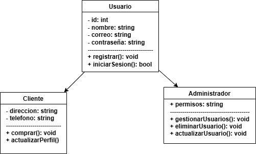

Diagramas de Clases
A continuación, se presentan los diagramas de clases del Sistema de Gestión de Inventarios:
Diagrama de Clases General del Proyecto
.png)
Diagrama de Clases Modulo Pedido
.png)
Diagrama de Clases Modulo Producto
.png)
Diagrama de Clases Modulo Usuario
Diagramas de Actividades
A continuación, se presentan los diagramas de actividades del Sistema de Gestión de Inventarios:
Diagrama de Actividades Gestion de Pedidos
.jpeg)
Diagrama de Actividades Gestion de Usuarios
.jpeg)
Diagrama de Actividades Gestion de Productos

Glosario Técnico y Vocabulario de Codificación
| Término | Descripción |
|---|---|
| API | Interfaz de Programación de Aplicaciones. Es un conjunto de definiciones y protocolos que permiten que una aplicación se comunique con otra. |
| Backend | Parte de una aplicación o sistema que no es visible para el usuario, encargada de la lógica del negocio y la gestión de datos. |
Glosario de Gestión Tecnológica
| Término | Descripción |
|---|---|
| Escalabilidad | Capacidad de un sistema para aumentar su rendimiento o capacidad al agregar más recursos, como servidores o usuarios. |
| Disponibilidad | La medida de tiempo que un sistema está operativo y accesible para los usuarios. |